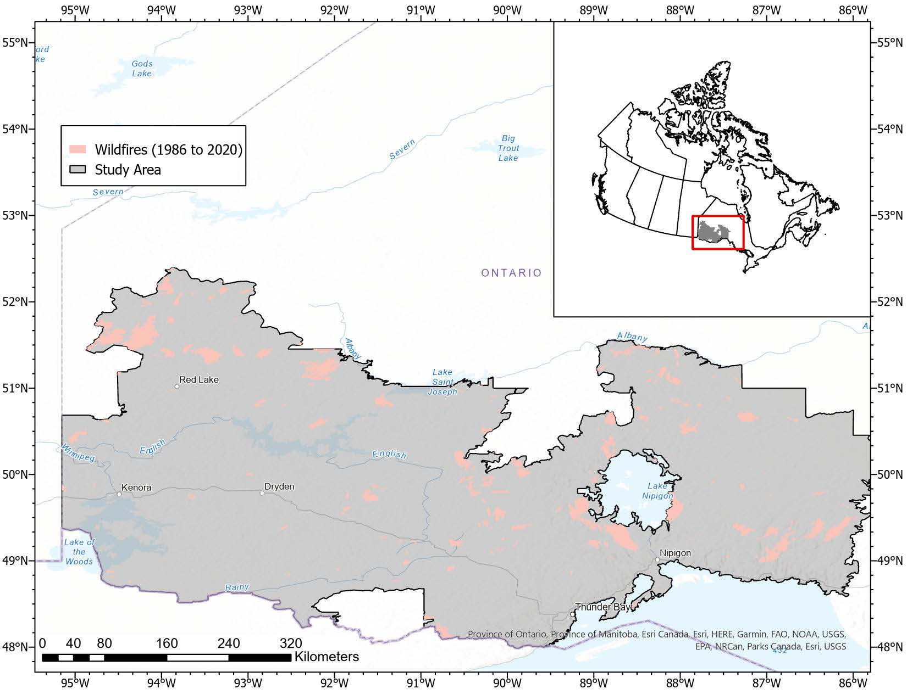
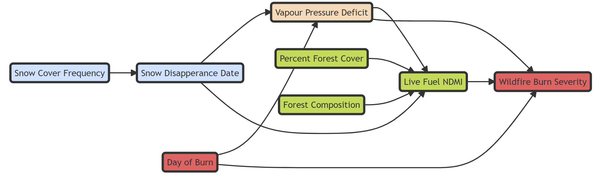

Research
Overview
My research focuses on the cool-temperate ecosystems of the boreal forest of Canada. With climate warming these ecosystems are largely forgotten compared to western North America, and the ways that climate warming shapes natural disturbance dynamics in these ecosystems remain uncertain. I incorporate methods from different fields to answer my research questions, including remote sensing, spatial and temporal modelling, structural equation modelling and machine learning.
My on-going work covers three general themes:
- Climate drivers of wildfire severity
- Insect defoliator and wildfire interactions
- Snow cover dynamics and disturbance severity
Why do we care about wildfire burn severity?
Wildfire severity – changes in vegetation and soil following a wildfire – is an ecosystems response to wildfire that has both ecological and societal impacts. Wildfire severity captures the change in ecosystem structure and function following a wildfire and directly affects ecosystem services such as succession, water quality, timber volume, soil fertility, climate regulation, food and water provision, and biodiversity. Fire and forest managers rely on knowledge about the drivers of wildfire severity to implement management strategies in targeted areas to reduce the costs associated with the loss of ecosystem services. Of particular concern to fire and forest managers are how the spatial and temporal legacies of environmental controls on wildfire will influence wildfire severity and, if so, will severity increase or decrease, and what spatial and temporal patterns in the environment are most important for wildfire severity.
Climate drivers of wildfire severity

Over the last century, wildfires across the boreal forest have become larger and more intense. These trends are expected to continue under future climate projections, with longer fire seasons, more extreme droughts, and more frequent interactions with other disturbances. We know little about how climate change will impact wildfire severity in the eastern boreal forests of North America and what that will mean for resilience.
One of the challenges in forecasting burn severity under climate change is the temporal variabiliity inherent to climate and weather. Yet, how measurements of climate and weather at different time lags will influence models of fire behaviour is unclear. Part of my PhD thesis focuses on the sensitivity of burn severity to moisture availability at different time-lags. Understanding at what time lag wildfire burn severity is most sensitive to changes in moisture availability will help build more accurate projections of wildfire severity under climate change and help managers conserve ecosystem services.
I have shown that burn severity is most sensitive to moisture availability at short (intra-annual, monthly) time-lags in the managed forests of the Ontario boreal shield. At that winter and spring relative humidity is an important indicator for both median and extreme wildfire severity during the fire season.
Snow cover dynamics and wildfire severity
Climate warming is projected to cause earlier snowmelt and reduction in snow cover duration. Since the boreal forest experiences a long snow-covered season and most of the annual precipitation falls as snow snow cover dynamics may play a prominent role in models of wildfire burn severity. Yet, no study has explicitly modelled the link between snow cover dynamics and wildfire burn severity. I am interested in the following:
- Does the inclusion of snow cover dynamics improve models of wildfire burn severity?
- Are the effects of snow cover dynamics direct or indirect?
- Does the relationship vary across spatial scales and throughout a fire season?

Figure 1. Proposed causal relationships between snow phenology (blue), fire characteristics (red), forest characteristics (green) and climate (coral)